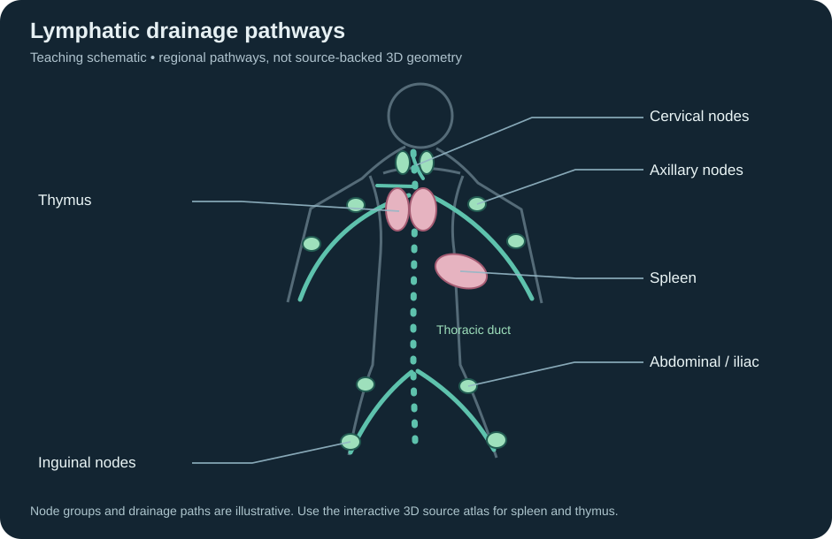
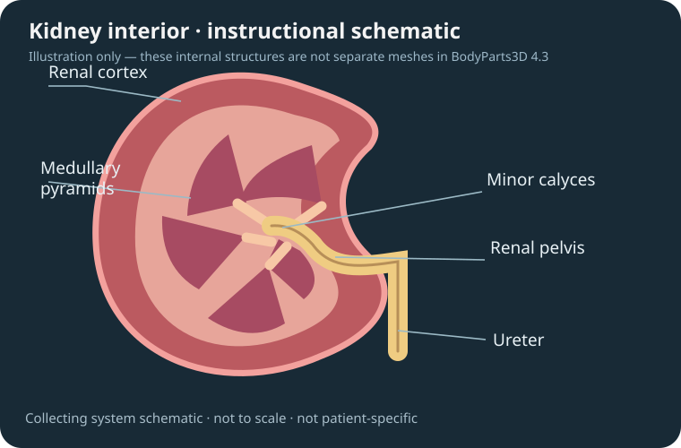

CHAPTER LABELS
Click a structure to place its label. Esc cancels.
QUESTION 1
Identify the highlighted structure.
Loading a detailed anatomical model for the first time.
Identify the highlighted structure.
Student permissions can be adjusted under Teacher Studio → Student Controls. Generate a link to publish this lesson.
For Schoology, add a File/Link/External Tool → Link and choose Display in Schoology using the Schoology link above. HTML iframe snippets may be removed by Schoology’s page editor. Test in Student View.
Publish once, then update the same public lesson file. Students keep one short link. No shared server, GitHub App or teacher credentials built into AnatomIQ Studio.
By default your token is held in memory only. Remembering the connection below is optional and requires an encryption passphrase. Never connect on shared student devices.
Encrypts your GitHub token on this device. Reloads reconnect automatically in this tab; a new tab or browser session requires this passphrase, not another GitHub token.
Use only on a private, trusted browser. Encryption protects the stored token when the vault is locked, but no browser-only method protects against malicious code running in an unlocked page. Disconnect or Forget clears this browser's saved credential.
Connect to a public GitHub repository to publish.
Published lesson JSON is public and can be inspected by anyone. Do not use this as secure exam access control. Image references must already be publicly hosted. Use Snapshot links above when the lesson must not change.
These controls hide UI, not source model data. An HTML/URL-only app cannot securely prevent technically skilled students from accessing anatomical names or changing the viewer; don't treat this as a locked-down assessment environment.
Saved lessons are stored on this Chromebook in this Chrome profile. Student links stay independent of the library.
Important: the library does not sync across Chromebooks. Chrome site-data clearing or school device resets can erase it. Use Back up library to keep a copy in Google Drive or another safe location. Importing a backup adds lessons without overwriting existing ones.
These simplified regional pathways are not anatomical meshes or patient-specific geometry. The spleen and thymus remain selectable in the 3D atlas.

The 3D kidney is a verified external anatomy mesh. This separately labeled drawing illustrates internal organization and is not patient-specific 3D source geometry.

File manages the current lesson: save, import/export, drafts and student links. Edit includes Undo/Redo and chapter actions. Library lists saved lessons in this Chrome profile.
Scene Library data is local to this website and Chrome profile, and is not automatically backed up or synced. Use Library → Back up entire library regularly. Clearing site data may remove your library and drafts. Sharing a student link does not upload your saved library.
Standard is recommended for accurate dental alignment and predictable performance. In Experimental mode, only safely matched skull surfaces are upgraded; the original maxillae, mandible and teeth remain together. The replacement uses a neutral bone material. Existing 1.7.1 devices have been reset to Standard once. The experiment requires models/skull-detailed.glb and models/skull-structures.json. The setting is device-specific and never changes saved lessons or student links.
Uses 125 verified DBCLS / BodyParts3D 4.3 meshes. Device quality does not affect lesson structure IDs. Changing this option reloads the viewer.
Respiratory assets are self-hosted; this selection is device-local and does not affect student scene anatomy.
Geometry detail is device-specific. It doesn't change the teacher's shared scene.
This setting controls mesh resolution only. To display the additional organs, select Digestive and enable Detailed anatomy under Anatomical Systems in the left sidebar. The choice here is device-specific and does not change published scenes.
Changes immediately. Natural Bone retains the approved satin highlights with fine, screen-filtered surface microrelief. No geometry changes, displacement or altered anatomical landmarks. Cartilage, discs, teeth and teacher paint remain separate. This preference is local to this device and is not part of saved lessons.
Studio uses shared directional lighting and physically based surface finishes to add realistic depth to bones, muscles, vessels and organs. Changing this option reloads the viewer. This choice is saved only on this device and never changes saved lessons or student links.
Close-up anatomy stays sharp at the camera focus; distant anatomy softens. Labels and menus remain sharp. The setting applies only to this browser and can be changed without reloading.
A single camera-aware key light casts real-time shadows where anatomical surfaces overlap. Shadows update when you rotate, zoom, hide or reveal structures. Faster Chromebooks can use Auto or Off. Transparent heart cavity volumes never cast opaque shadows. This setting is saved only on this device; changing it reloads the viewer.
Quality is stored on this device only. It does not change the teacher's lesson or the student's shared scene.
Downloads fresh copies from this GitHub Pages site. Verifies each file before replacing the model cache. Does not clear lessons, drafts or settings.
Updates are checked against your own GitHub Pages site's version.json file, not an external update service.
For independent hosting, include vendor/three/, models/ecorche.glb, and models/anatomy-organs.glb in this GitHub repository. The app can temporarily use the earlier CDN links when files are missing. For offline access, use Help → Prepare offline access. Saved library scenes are local to this Chrome profile; back them up before clearing site data.